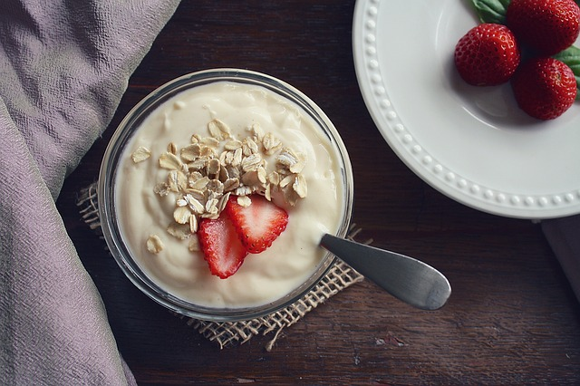

Sporcu Beslenmesi Nasıl Olmalı
-Sporcu uygun antrenmanlar eşliğinde, uygun yaşam tarzı ile sağlıklı beslendiğinde performansı olumlu şekilde artar.
-Kişinin beslenme düzenini etkileyen faktörler arasında kişinin fiziksel aktivite durumu da önem taşır. Aktif spor hayatı olan kişiler de yapılan sporun çeşidi, yapılma süresi ve sıklığı da beslenme düzenini ve besin gereksinmelerini etkiler.
-Sporcunun aldığı sıvıların ve makro besinlerin türüne, miktarına ve zamanına önem vermektedir. Ek olarak vitamin, mineral ve supplement desteklerinin nasıl ve ne kadar kullanılması gerektiğini belirler.
-Enerji ve besin ögeleri gereksinimleri yaşa, cinsiyete, ağırlığa, boya, yapılan spor dalına ve sıklığına göre farklılık gösterir.
-Beslenme ihtiyaçları sporcunun yaşına, fiziksel yeterliliğine, oynadığı alanın rekabet düzeyine, çevreye, rekabetin süresine, maçlar arasında geçen süreye ve diğer birçok faktöre bağlı olarak belirlenir.
Yapılan spor ne olursa, o spor veya aktivitede daha iyi performans gösterirsiniz.
Sakatlıklara engel olur, daha fazla konsantrasyon sahibi olursunuz.
Antrenman sonrasında daha az yorgunluk hissedersiniz.
Doğru beslenme; enerji dengesini sağlayarak, vücut ağırlığı yönetimini ve vücudun en uygun şekilde fonksiyonlarını sürdürmesini sağlar.
Besinlerle yeterli enerji alırsanız daha aktif olabilir, yeterli protein alırsanız kas kütlenizi koruyabilirsiniz.